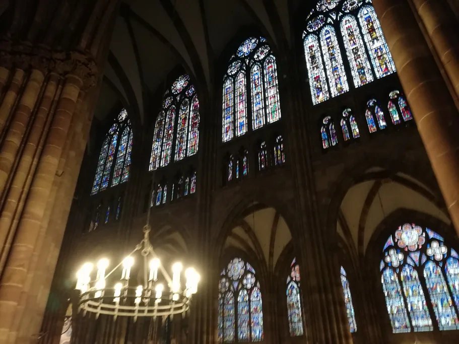
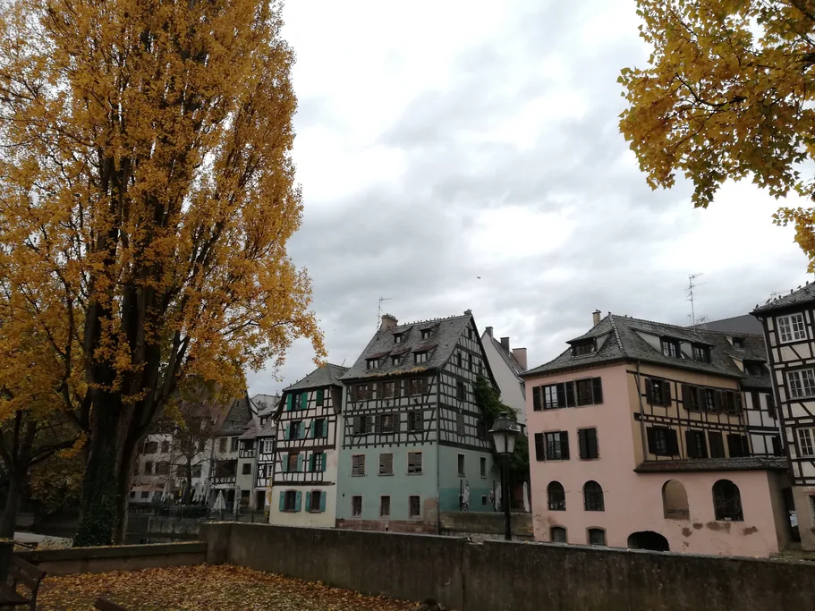
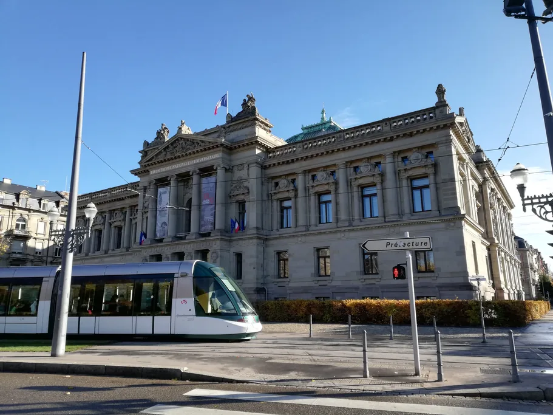
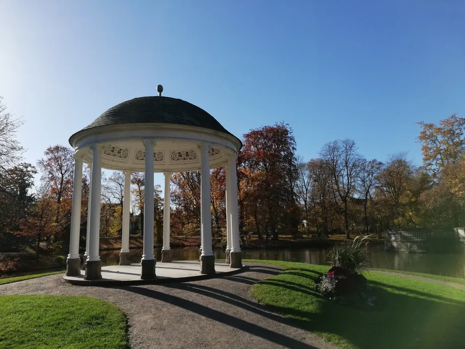
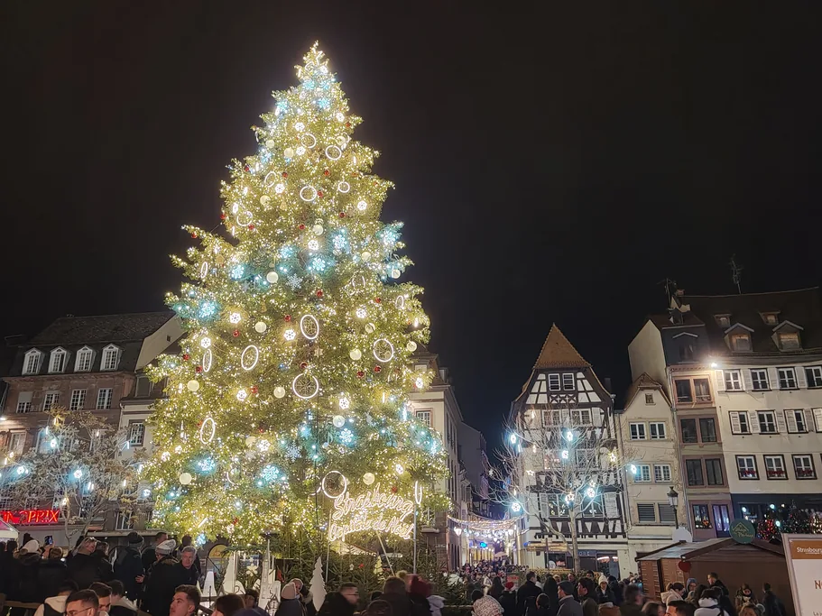

One walk through Strasbourg takes you through several very different cities. Medieval houses crowd around the cathedral, former tanners' workshops line the channels of Petite France, and beyond the historic island the broad avenues of the German-built Neustadt begin. Almost all of it is within walking distance. The old center, the Grande Île, was listed as a UNESCO World Heritage Site in 1988, and the Neustadt was added in 2017.
The city itself says very little about its past: the plaques on the houses are brief, and the best stories never made it onto them. Those stories are what the TouringBee audio tour of Strasbourg is built around. Its 33 stops lead from the train station through Petite France to the cathedral, and you can walk it at your own pace. If you'd rather plan the day hour by hour, the one day in Strasbourg itinerary does exactly that.

Strasbourg Self-Guided Audio Tour Instant access
At a glance
| What to know | |
|---|---|
| Cathedral | Free entry to the nave, midday break |
| Astronomical clock | Show at 12:30, €4, tickets only on site and on the day |
| Viewing platform | 330 steps, no elevator, €10 |
| Batorama boat | A little over an hour, tickets for a specific departure |
| City museums | Separate ticket for each, plus a one-day pass |
| Free | Petite France, Ponts Couverts, Barrage Vauban terrace, Neustadt, Parc de l'Orangerie, European Parliament |
Six experiences to start with
1. The cathedral's west facade
Looking at the facade costs nothing, and you can take as long as you like. Many people give it a few seconds and head straight inside, though ten minutes here pay off. Step back to the far edge of Place de la Cathédrale, where you can see how all the stone tracery fits together.
The facade is built in two layers. Erwin von Steinbach, who led the work from around 1284, set a separate screen of slender stone shafts and arches in front of the massive load-bearing wall. It's known as the stone harp. As the sun moves, the front layer casts shadows on the back one, and the wall seems to shift. Toward evening the sandstone turns pink, and in the rain it darkens almost to purple.
The cathedral has only one spire, because the second was never built. From 1647 to 1874 it was considered the tallest building in the world, and you feel that best on narrow Rue Mercière, which leads straight to the facade and is filled by it from side to side. The portals, the stained glass and the long story of its construction are covered in our Strasbourg Cathedral guide.

2. The astronomical clock at 12:30
The astronomical clock in the south transept shows far more than the time. Its mechanism works out the date of Easter and tracks the movement of the heavens. But most visitors come for the 12:30 show, when mechanical apostles file past Christ and a rooster flaps its wings and crows.
You need a ticket for the show, sold at the cathedral and only on the day of your visit. There's no show on Sundays, on some church holidays or at any point while the Christmas market is running, so it's worth picking your day in advance. Why the figures come out at 12:30 rather than at noon, and what the two sets of hands mean, is explained in our guide to the astronomical clock.
3. The viewing platform: 330 steps
The climb to the platform is 330 steps up a narrow stone spiral, and there's no elevator. It's a paid climb, and timing matters: the platform keeps seasonal hours, closes for a midday break and stops letting people up well before closing time. Tickets aren't sold in advance, so the line is usually shortest right at opening.
At the top, the layout of the center finally makes sense. The arms of the Ill wrap around the historic island, the roofs of Petite France sit right below you, the Ponts Couverts are visible to the west, and on the horizon the Vosges rise on one side and the Black Forest on the other.
4. Petite France and the Ponts Couverts
Petite France is Strasbourg's most picture-postcard quarter. Half-timbered houses stand right at the water's edge, narrow lanes run between them, and small bridges link the banks of several channels of the Ill. It's a pleasant place to wander with no particular plan, and of course it's free. But behind the pretty facades lies the history of a working quarter.
Tanners, millers and fishermen once lived here. Tanners needed running water, and they dried their hides under the steep roofs, which is why some attics still look like open balconies. Even the name has a grim origin. In the early 16th century a hospital for syphilis patients opened here, and in German-speaking lands the disease was called the French disease. Our Petite France guide explains what to look for as you explore the quarter and where to find the best photo spots.
At the western edge of the quarter stand the Ponts Couverts: bridges and three surviving 13th-century defensive towers, part of the old city fortifications. The covered wooden galleries over the bridges between the towers were taken down back in 1784, but the name stuck. Directly opposite, the Barrage Vauban spans the river.

5. The free terrace on the Barrage Vauban
From the riverbank, the Barrage Vauban looks far plainer than the medieval towers across the water. The long, low sandstone structure is easy to mistake for an ordinary bridge and walk past. Inside, though, runs a covered gallery of historic sculptures and casts linked to the cathedral, and a staircase at its end leads up to a panoramic terrace.
From up here you see the Ponts Couverts in full. Behind the towers stretch the roofs of Petite France, and above them rises the cathedral spire. It's one of the best views in Strasbourg, and it's free, while the cathedral platform means buying a ticket and climbing 330 steps.
The dam itself was built at the end of the 17th century to plans by Vauban, Louis XIV's military engineer. By lowering the gates in its 13 arches, the city could raise the level of the Ill and flood the approaches from the south. The terrace keeps seasonal hours and closes noticeably earlier in winter. In 2026 the elevator and stairs were being replaced, so check the hours on the City of Strasbourg website before you go.
6. An hour on the Ill by boat
The city looks different from the water. Many houses in the old center turn their best facades toward the river, the boat passes through the locks of Petite France, and then it heads out to the European Quarter, where glass and concrete take over from half-timbering. One ride shows you both medieval Strasbourg and the city of today.
Batorama's most popular route takes a little over an hour. Boats run year-round, open-top ones appear in warm weather, and the onboard audio guide comes in a dozen languages, English included. Tickets are sold for a specific departure, and in high season the next available seats may be a couple of hours away, so it's easiest to choose your time in the morning. The pier is printed on your ticket: work is under way at the landing stages, and boarding points can change. River cruises are also among the Strasbourg tours on GetYourGuide.
Hear the stories behind the facades
33 stops from the train station through Petite France to the cathedral, at your own pace and offline.
More to see and taste
7. The Neustadt, the German quarter beyond the island
After 1871 Alsace became part of the German Empire, and within half a century a second city grew up northeast of the medieval island. You notice the difference at once. A moment ago there were crooked lanes and half-timbering, and a few minutes' walk later come wide avenues, heavy sandstone facades and spacious squares. The Neustadt is about ten minutes on foot from the cathedral, and it's usually much quieter.
The heart of the quarter is Place de la République, called Kaiserplatz under German rule. Its most striking building, the domed Palais du Rhin, was built between 1884 and 1889 for the German emperor. Around it stand the university library and the former parliament of Alsace-Lorraine, now home to the Théâtre National de Strasbourg.
In the middle of the square stands a war memorial: a mother holding her two dead sons on her lap. Alsatians fought in the First World War for both France and Germany, and over three centuries the city changed hands between the two countries several times. So at the center of this memorial is one family's grief, and there's no victory in it.

8. Dinner in a winstub
A winstub is an Alsatian wine tavern serving home cooking, with checked tablecloths, wood paneling and wine glasses on green stems. Two dishes make a good introduction to Alsatian food. Flammekueche is wafer-thin dough topped with fromage blanc, onions and smoked bacon, baked in a very hot oven. Baeckeoffe is three kinds of meat marinated in white wine and layered with potatoes in a sealed clay pot. According to tradition, women would take the pot to the local baker to cook in his oven and pick it up a few hours later, when the dish was ready.
At restaurants on Rue des Moulins in Petite France, you're also paying for the waterfront view, so it's worth comparing menus with winstubs on nearby streets. Winstubs tend to be small, so for a weekend evening or anytime in December it's wise to book a table.
9. The three museums of the Palais Rohan
Across from the south side of the cathedral stands an 18th-century palace built for the prince-bishops of the Rohan family. Kings and Napoleon once stayed here. Today the palace houses three museums, each interesting in its own way. The Museum of Decorative Arts preserves the bishops' state apartments. It also houses the mechanical rooster from the cathedral's 14th-century clock, one of the oldest surviving automatons in Europe. The Museum of Fine Arts covers European painting from the Middle Ages to the 19th century, and the Archaeological Museum tells the story of who lived here long before Strasbourg existed.
Each museum has its own ticket, but if you're planning to see several, the one-day pass is better value. It's sold only at the museum desks. The Palais Rohan museums close on Tuesdays and open on Mondays, unlike most of the city's museums.
10. The Historical Museum and the 1727 model of the city
The museum occupies the former Grande Boucherie, the great slaughterhouse built in the late 16th century, and its centerpiece is a huge relief model of Strasbourg and its surroundings, made in 1727 by order of Louis XV. It's worth lingering over: the model clearly shows the city walls and bastions, almost none of which survive today. When you step back outside, it's easier to see why old Strasbourg is laid out the way it is. The museum is closed on Mondays.
11. A separate day trip: Colmar or the Wine Route
Colmar is about half an hour from Strasbourg by train, and it deserves a full day. Schedules and tickets are easy to check on SNCF Connect. The town is smaller than Strasbourg, its half-timbered center has survived almost intact, and the Unterlinden Museum holds Matthias Grünewald's Isenheim Altarpiece.
Colmar is also a convenient base for the Alsace Wine Route. It runs along the slopes of the Vosges through vineyards and villages such as Riquewihr and Kaysersberg, overlooked by Haut-Koenigsbourg Castle, rebuilt from the ground up under Kaiser Wilhelm II. Without a car, a tour is the easiest way to go, and you'll find them among the Alsace day trips on GetYourGuide.
Five more ideas for Strasbourg
12. The European Parliament
Strasbourg is one of the cities where the European Parliament sits, and the building is open to visitors free of charge. The highlight inside is the vast semicircular chamber where plenary sessions are held. Standing in front of the rows of members' seats, it's easier to picture the debates over laws for the whole European Union. Next door, the Parlamentarium Simone Veil explains how decisions are made that then affect people in 27 countries.
In ordinary weeks, individual visitors don't need to book. During plenary sessions, you need to register in advance to enter the chamber and watch the debates. Entry conditions are published on the European Parliament visitors' website. Bring your original passport or national ID card, since photos of documents on a phone and driver's licenses aren't accepted at the entrance. Hotels tend to fill up during parliamentary sessions, so it's worth booking early. You can compare places to stay in Strasbourg on Booking.com.
13. Parc de l'Orangerie and the storks
Across from the European Quarter lies the Parc de l'Orangerie, one of the city's favorite places for a stroll. Its history goes back to the 18th century, and today it has shady paths, a lake with rowboats for rent and a pavilion named after Empress Joséphine. The old zoo is gone, and the former mini-farm now houses Micado, a center devoted to animal behavior. It's open only through special programs, so don't count on walking in.
The storks are the real draw. In 1974 only nine breeding pairs were counted in all of Alsace, and the bird that is hard to imagine Alsatian rooftops without had nearly vanished. It was brought back with the help of special breeding centers, and today there are more than a thousand pairs. In the Orangerie you can see nests right in the trees, and from spring to late summer there are chicks in them. That's also why storks appear in every other souvenir shop window.

14. Place Kléber and Place Gutenberg
Sooner or later almost everyone walking around the center crosses Place Kléber. It's the largest square on the Grande Île, lined with shops and cafés, and in December a giant Christmas tree goes up here. It's named after General Jean-Baptiste Kléber, a native of Strasbourg who was killed in Cairo in 1800. He's buried right here, beneath his own statue.
On the north side of the square stands the Aubette, an 18th-century building with surprising interiors. In 1928 Hans Arp, Sophie Taeuber-Arp and Theo van Doesburg decorated its rooms in the spirit of abstract art, and today these interiors, known as L'Aubette 1928, are free to visit, though only on a few days a week and in the afternoon.
Close to the cathedral is the small Place Gutenberg, with a bronze statue in the middle. The inventor of printing lived in Strasbourg for about ten years before returning to Mainz, and historians believe it was here that he began experimenting with printing. The city is proud of that, hence the statue right in the center.
15. A market and a glass of Alsatian wine
To see Strasbourg beyond the postcards, stop by an ordinary city market. Locals do their own shopping here, and a walk between the stalls feels nothing like a walk past the souvenir shops by the cathedral. For visitors, the most convenient is the market on Place Broglie, held on Wednesday and Friday mornings, though in December the square is taken over by the Christmas market.
Among local products, start with Munster, a soft washed-rind cheese whose smell is much stronger than its taste. Alsatian wine goes well with it, and for a celebration there's Crémant d'Alsace, a sparkling wine made by the same method as Champagne. Alsatian wines are named after the grape, Riesling, Pinot Gris or Gewurztraminer, which makes a wine list here easier to navigate than one in Burgundy.
16. The Christmas market, if you're here in December
The Christkindelsmärik has been running since 1570 and is considered the oldest in France. In 2026 it's open from November 27 to December 24. The tree stands on Place Kléber, the first market was held on Place Broglie, and today the chalets spread across more than a dozen squares on the island. While the market is on, there's no astronomical clock show, and visitors enter the cathedral through the south portal on a special schedule. Our Christmas market guide explains which squares to visit and how to avoid the worst crowds on the weekends just before Christmas.

What to leave out
The Alsatian Museum. It often appears on lists of Strasbourg's top sights, but it's closed for renovation until June 1, 2028. If you see it in a ready-made itinerary, that information is out of date.
"Skip-the-line" tickets for the clock or the platform. The cathedral sells both only on site and only on the day of your visit. If someone online promises skip-the-line entry, it's most likely a guided tour, not the ticket itself.
A Saturday evening by the tree on the last weekends before Christmas. The island's narrow streets aren't built for it, and on Place Kléber the crowds barely move. Late November and the first week of December are much calmer.
Strasbourg with an audio guide
The TouringBee audio tour starts near the train station and runs through Petite France, past the Ponts Couverts, the Barrage Vauban and the cathedral, to St. Paul's Church. You can start whenever you like and play each recording when you reach the stop. That's handy if you also want to make the 12:30 clock show or a boat departure: the walk is easy to pause and pick up later, and access lasts a year.
- 33 stops, about 2.5 hours at your own pace, recordings of 1–3 minutes.
- From €9.99, one-time payment, one year of access, 8 languages.
- Download the tour in advance, and the map and recordings will work without an internet connection.
- The map shows where you are, making it easy to find the next stop.
Ready to explore Strasbourg?
Some of Strasbourg's best experiences are free: watching the cathedral facade change with the light, wandering through the old tanners' quarter, and taking in the view from the roof of a military dam. The clock, the platform and the boat earned their places because nothing else can replace them. And once you've seen the essentials, save some time for the Neustadt, then end the evening in a winstub with a baeckeoffe.
Frequently asked questions
What should I see first in Strasbourg?
The cathedral's west facade, then the astronomical clock at 12:30. Together they take under two hours, and the facade is free.
Can I buy tickets for the clock or the platform in advance?
No. Both are sold only on site and on the day of your visit, and the clock and the platform have separate entrances.
What can I do for free in Strasbourg?
The cathedral nave, Petite France, the Ponts Couverts, the Barrage Vauban terrace, the Neustadt, Parc de l'Orangerie and the European Parliament. City museums are free for visitors under 18.
Is there a combined ticket for Strasbourg's museums?
Yes, a one-day pass covers all the city museums and is good value if you plan to visit several. It's sold only at the museum desks.
What should I leave out of my plans?
The Alsatian Museum, closed until June 1, 2028, and any "skip-the-line" tickets for the clock or the platform: no such tickets exist.
When is the Christmas market in 2026?
From November 27 to December 24. There's no astronomical clock show during those weeks.
Further reading
- One Day in Strasbourg — an hour-by-hour itinerary built around the 12:30 show
- Strasbourg Walking Tour — a free loop through the center
- Strasbourg Cathedral — the facade, stained glass, opening hours and 330 steps
- Petite France — the tanners' quarter, the Ponts Couverts and a free terrace
- Strasbourg in Winter — weather, the market and quiet January

Eugene has lived in France for 16 years and worked as a tour guide before founding the travel-content network paris10.travel. He wrote the TouringBee audio tour of Strasbourg.
Every price and opening time on this page is checked against the official source for the current year. Where a fact is not yet published, we say so instead of guessing.
TouringBee audio tours are our own product. Links to GetYourGuide, Booking.com and SNCF Connect are affiliate links. If you book through them, we may earn a small commission at no extra cost to you. These partnerships never influence our recommendations.